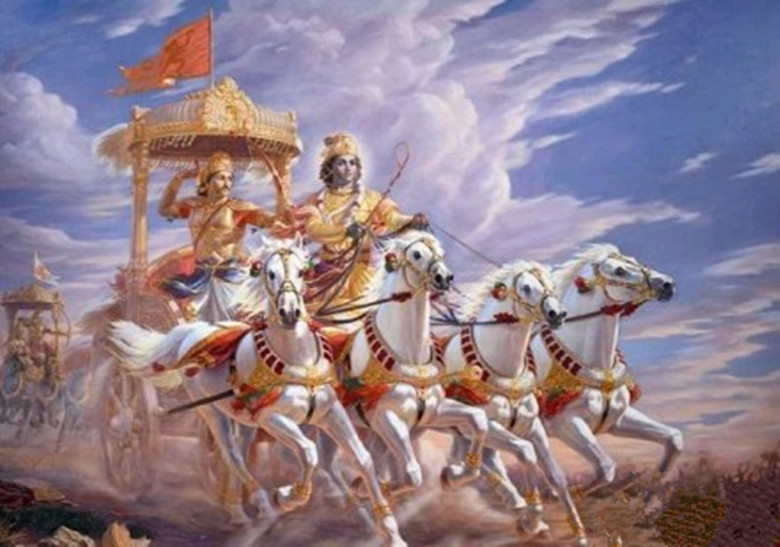
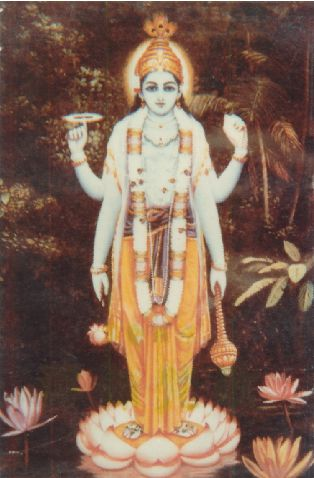
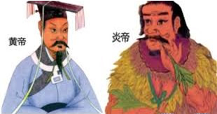
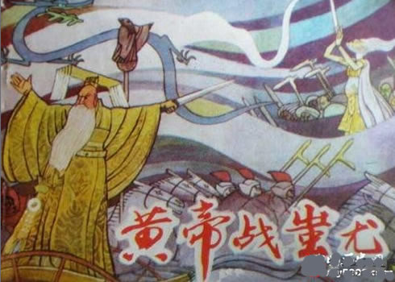

昆仑史曲 第二次天地大戰
七，俱芦大战，炎黄大战
公元前26---25世纪。

印度势力最大的部落俱芦族的大君“持国”、要把王位传给他的儿子，按当时母系社会的规矩这是错的---就连他自己的王位也是从他的兄长般度王手里接过来 的。般度王子阿周那替天行道，与叔叔协商不成，便同四位哥哥各率自己的部族以武力来夺，他们的统帅是王子的岳父---代表母系掌权。
持国大君的一百个儿子也各率自己的部族迎战，统帅是百王子的叔父，代表父系掌权。
持国是个盲人，他让一个有天眼天耳的御巫给他报告战场情况。

般度王子这边兵力虽然薄弱，但得到了神助。大黑天女神以男相下世，住胎游牧族中，取名克里希娜。克里希娜与阿周那同在一辆战车上，战场上临场教诲阿周那替 天行道而不能行人道的道理。这些珍贵语言，被俱芦御巫听到并转述给持国大君，记录下来，就是旷世奇书《薄伽梵歌》。
双方在俱芦之野开战，残酷的厮杀，竟使幸存者无几。阿周那一方最终获胜。
大黑天女神为何要助般度王子？因为阿周那是玄龙大帝转世，而“克里希娜”就是东洋女王九天玄女。
俱芦大战后不久，在中华中原大地，两个最大的部落黄帝族和炎帝族出于同样的原因开战。炎黄大战引起了中原内乱。

西洋女王见此情况，便命令他的战团乘机加入 到炎帝军统帅蚩尤大将军一边，随后又有一些战团也加入蚩尤一方，蚩尤军就拥有了西洋女王部族五十三个，观音部族二十五个，策反妙云、妙密部族各一个，外加 弥勒部族共计八十一个战团。此外，四海龙王一反第一次天地大战时立场，也在外围对蚩尤相助。双方立即变得兵力悬殊，对黄帝一方形成了压倒之势。
对蚩尤强大的联合战团，黄帝无论如何也是战不过的，很快就濒临全族全军覆灭的境地，中华民族又一次到了最危险的时刻！
经主持军政大权的西王圣母同意，九天玄女下界助黄帝。但西王圣母有令，蚩尤可打不必杀。
黄帝跪拜在母亲面前求退兵之策，九天玄女传了他神灵符咒和五行阵法，又传他造指南车之法。所谓五行阵法是行军作战的运动战法，古曰：“行，前朱雀而后玄武，左青龙而右白虎，中军无极土。” 玄女还令罗地干布发连山之兵来助。罗地立即调驻辽东、朝鲜、日本的战团去中原。他以痴羞女的鹰雀战团、心国虎的熊虎战团这一上一下打头阵，中军是大罗刹女的部分精锐。所以，在以后的战斗中，冲锋陷阵的主力成了东洋的部队，而黄帝军只是尾随其后呐喊助阵。
此时，炎黄大战的实质已经发生变化，不再是为争夺王位的一个小小的局部战争，而成了第二次天地大战的继续。

中华民族自己所说的“五千年”历史，就是由这儿算起的。五千年后，“黄帝”又一次领天命下界投胎转世，他使东方古族繁衍下来的、一个远远落后于世界而挨打受气的、半殖民地半封建的“东亚病夫”，成了屹立于世界民族之林的“东方巨人”！正如《修行者》评价的：“毛泽东的伟大，在于为中华民族建立了强大的军队 和国防。这是万古千秋永恒的战功。他完成了一代天尊九天玄女的使命，重新建立强化了东方的万里长城。”逝世七十年后他将再一次转世临凡，现在的少年、青年 和部分壮年人、又有福气享受他的时代。
----当然，这是后话。
| 上 一 頁 | 下 一 頁 | 回 主 頁 |